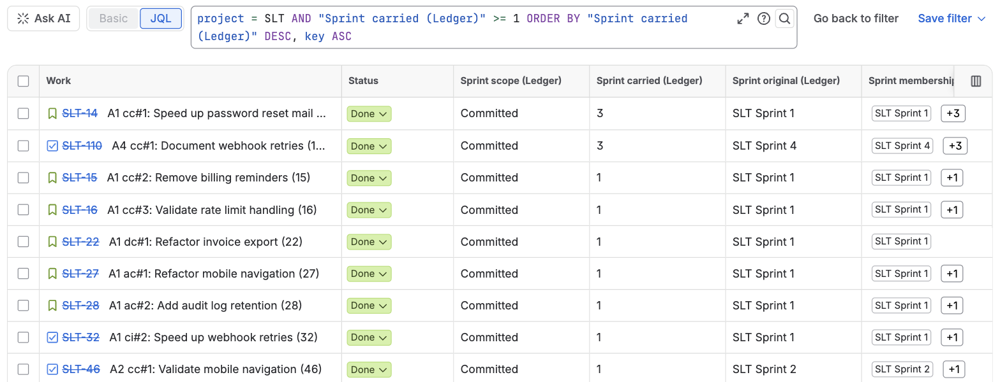

Sprint Ledger writes ten read-only fields onto every issue of the projects it tracks that has been in a started sprint. They work as columns in the issue search, sort and filter in JQL, and can be shown on the issue view. Their names all end in "(Ledger)", so they sit together in the column picker and never collide with another app's sprint fields.

Six of them describe the issue's latest sprint: the started sprint with the most recent start date among the sprints the issue counts in, including one it was removed from. Future sprints do not count until they start.
| Field | Type | What it holds |
|---|---|---|
| Sprint scope (Ledger) | text | How the issue took part in its latest sprint: Committed, Added after start, Removed or Added then removed |
| Sprint added (Ledger) | date and time | When the issue entered its latest sprint |
| Sprint removed (Ledger) | date and time | When it left its latest sprint; empty unless it was removed |
| Sprint start (Ledger) | date and time | The start date of the latest sprint |
| Sprint planned end (Ledger) | date and time | The planned end date of the latest sprint, whatever its state |
| Sprint completed (Ledger) | date and time | The date the latest sprint was completed; empty while it runs |
| Sprint carried (Ledger) | number | How many closed sprints the issue was in at completion without being done, across its whole history |
| Sprint original (Ledger) | text | The name of the first sprint the issue counted in |
| Sprint membership (Ledger) | text list | The name of every started sprint the issue has counted in, oldest first, each once, whether it was completed, removed or carried over. Future sprints are in Jira's own Sprint field |
| Sprint tags (Ledger) | text list | One token per sprint and outcome, which the JQL functions search: c: committed, a: added after start, r: removed, d: completed, x: carried over, each followed by the sprint ID, for example c:5231. The newest 100 tokens are kept |
"Counts in" means what How Sprint Ledger counts defines: the issue was in the sprint at its start or joined it before it closed, the sprint was not deleted, and the issue is not a subtask, unless an administrator has turned on counting subtasks.
Use the names in quotes, like any custom field:
"Sprint start (Ledger)" >= 2026-07-01 AND "Sprint scope (Ledger)" = "Added after start"
"Sprint membership (Ledger)" = "ACME Sprint 41"
project = ACME AND "Sprint carried (Ledger)" >= 3 ORDER BY "Sprint carried (Ledger)" DESC
"Sprint removed (Ledger)" >= -14d
"Sprint planned end (Ledger)" <= endOfWeek() AND "Sprint completed (Ledger)" is EMPTY AND statusCategory != Done
"Sprint original (Ledger)" = "ACME Sprint 12" AND statusCategory != DoneIn order: issues added mid-sprint to sprints that started since July; everything that was in ACME Sprint 41 once it started, including what was later removed or carried into the next sprint (Jira's own sprint = "ACME Sprint 41" is what is in it now); the issues that keep rolling over; what was taken out of a sprint in the last two weeks; unfinished work in sprints planned to end this week; and what is still open from a sprint long gone.
Dates in JQL are read in the time zone of the person searching, as for every Jira date field. For "which issues did something in a given sprint", the JQL functions are the better tool: the fields describe only the latest sprint, while the functions answer for any sprint.
In the issue search, open the column picker and search for "Ledger". The columns sort like any other, and the text-list fields show their values as lozenges. Neither columns nor JQL need any setup, in company-managed and team-managed projects alike.
For per-sprint numbers across a whole board, with who changed the scope and when, use the app's own CSV export instead.
Columns and JQL need no setup. To show the fields on the issue itself:
An empty read-only field shows as "None" on the issue view unless the layout puts it under "Hide when empty".
The values are written only by the app, in bulk, without adding entries to the issue's history. They follow Jira's own events: an issue dragged into or out of a sprint has its fields updated within a few seconds, and a sprint start or completion within about five. An hourly check compares each active and recently closed sprint with Jira and repairs anything an event missed, and a daily pass rewrites any value that has fallen behind. After the first installation, the fields fill in when the reconstruction reaches its last stage.
A field stays empty when the issue has never counted in a started sprint, when its project is not tracked, or for a subtask while subtasks are not counted.
The field names were settled with the beta sites in September 2026, in the app's 2.6.0 update. A saved filter or automation rule that uses an earlier name shows "Field ... does not exist" until its query uses the new one; Jira does not rename fields inside saved queries. Queries that use only the functions are not affected.
| Earlier name | Name now |
|---|---|
| Added to sprint (Ledger) | Sprint added (Ledger) |
| Removed from sprint (Ledger) | Sprint removed (Ledger) |
| Sprints carried (Ledger) | Sprint carried (Ledger) |
| Original sprint (Ledger) | Sprint original (Ledger) |
| Sprint end (Ledger) | Sprint completed (Ledger), the completion date only; the planned end is the new Sprint planned end (Ledger) |
| Sprint ledger tags | Sprint tags (Ledger) |